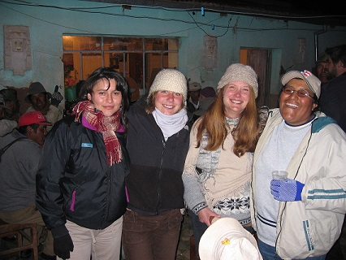

The Anthropology Department considers study abroad to be an integral aspect of a high quality undergraduate education in all subfields of anthropology. Study abroad provides you with the opportunity to move from learning about the world to learning in the world. With the right program and frame of mind, you can gain invaluable cross-cultural and field research experiences that will enhance your studies, career prospects, and outlook on life.
If you have any specific questions about study abroad and anthropology, see your academic advisor and/or Prof. Luis Vivanco, Department of Anthropology Study Abroad Coordinator (lvivanco@uvm.edu).